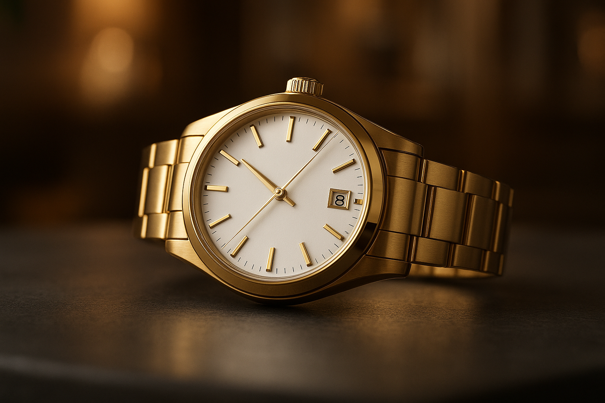
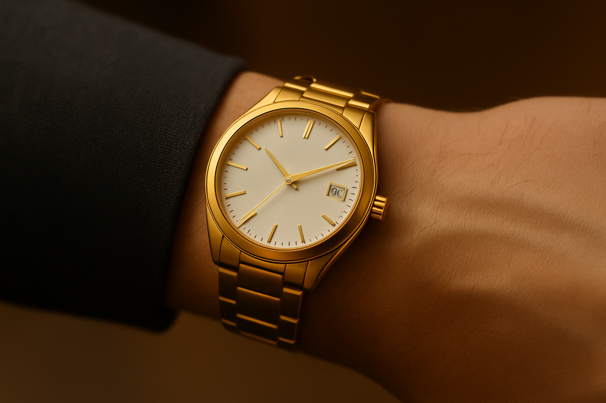
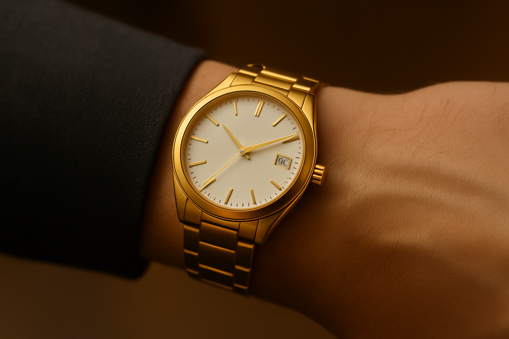
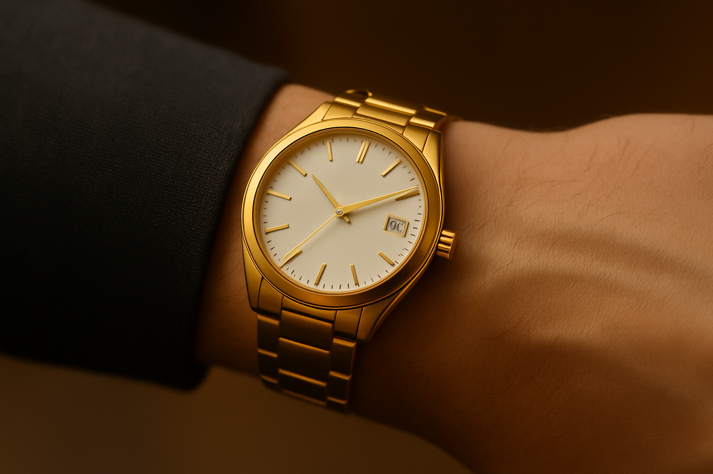
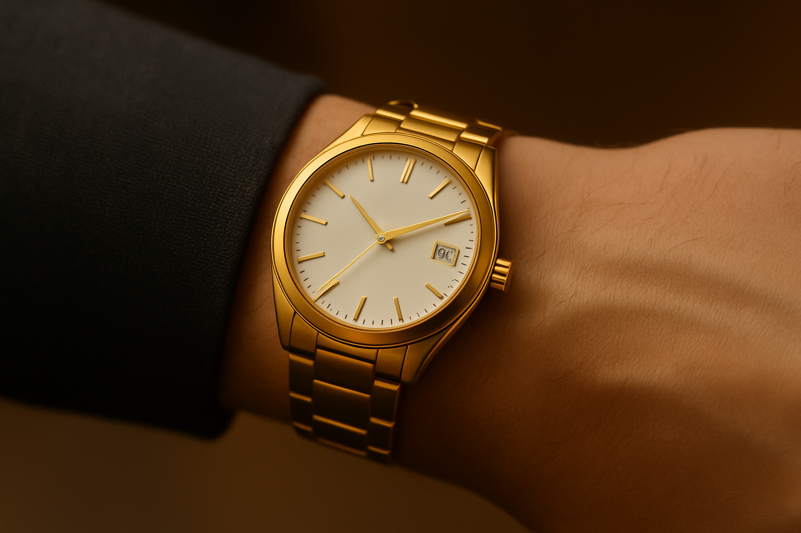

 



La esencia del tiempo en su forma más pura.
El LuxTime Gold Classic combina la sofisticación del diseño suizo con la elegancia atemporal del oro. Su carátula blanca minimalista refleja equilibrio y precisión, mientras los índices y agujas doradas se deslizan con fluidez bajo un cristal de zafiro que garantiza durabilidad y claridad impecable.
Cada detalle —desde su brazalete metálico dorado de acabado satinado hasta el fechador sutil a las 3 en punto— ha sido cuidadosamente diseñado para proyectar distinción sin excesos.
Más que un reloj, es una declaración de estilo y precisión, creada para quienes valoran la artesanía, la innovación y la elegancia contemporánea.
El LuxTime Gold Classic rinde homenaje a los orígenes de la marca: la unión entre la artesanía tradicional y la tecnología moderna. Cada pieza simboliza el ideal de LuxTime: celebrar el tiempo como un lujo accesible, con la elegancia que trasciende las modas.
Agregar al carrito